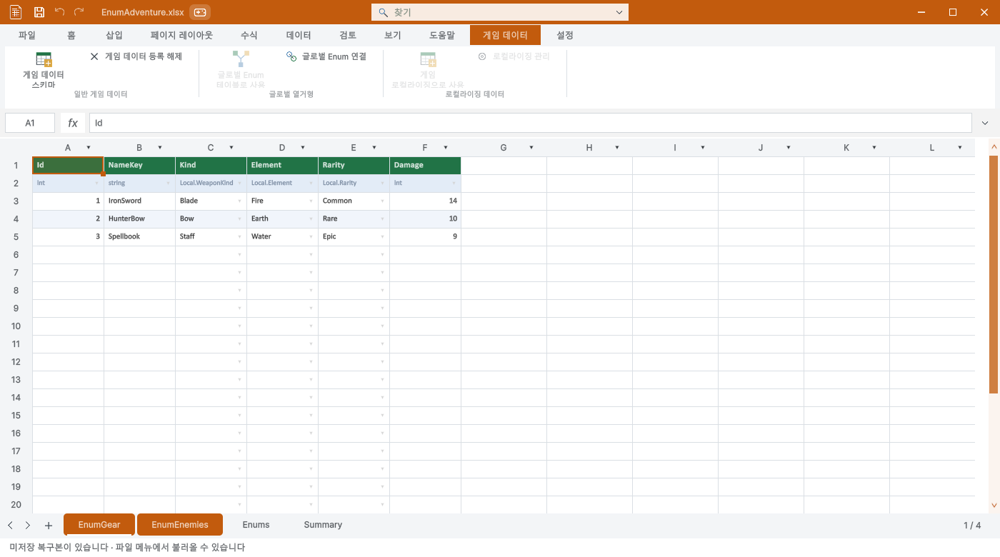

홈 탭과 같은 큰 주 동작·작은 보조 동작·섹션 구분선을 사용했습니다. 일반 게임 데이터, 글로벌 열거형, 로컬라이징을 분리했고 게임 데이터 탭과 시트 관리 창에서 Summary 생성 버튼을 제거했습니다.

등록 테이블 24개, 원본 23개, Summary 컬럼 172개를 대조했습니다. 모두 필수 Summary가 이미 있었으며 빠진 파일은 없었습니다. 게임 바이너리 24개도 동일합니다. 신규 게임 파일 기본 포함·필수 Summary 삭제 차단·반복 점검 시 변경 없음·9개 언어 섹션 문구·12개 실제 리본 화면을 포함한 304개 조건을 확인했습니다.
| 원본 | 테이블 | 컬럼 | 결과 |
|---|---|---|---|
| SampleCharacter.xlsx | 1 | 5 | 필수 Summary 있음 · 변경 불필요 |
| SampleShopProduct.xlsx | 1 | 6 | 필수 Summary 있음 · 변경 불필요 |
| SampleDropItem.xlsx | 1 | 4 | 필수 Summary 있음 · 변경 불필요 |
| SampleSkill.xlsx | 1 | 8 | 필수 Summary 있음 · 변경 불필요 |
| MiniGameBalance.xlsx | 1 | 8 | 필수 Summary 있음 · 변경 불필요 |
| EnumAdventure.xlsx | 2 | 13 | 필수 Summary 있음 · 변경 불필요 |
| ThreeDSettings.xlsx | 1 | 15 | 필수 Summary 있음 · 변경 불필요 |
| CanyonSettings.xlsx | 1 | 7 | 필수 Summary 있음 · 변경 불필요 |
| SkyboundSettings.xlsx | 1 | 6 | 필수 Summary 있음 · 변경 불필요 |
| DefenseSettings.xlsx | 1 | 14 | 필수 Summary 있음 · 변경 불필요 |
| GolfSettings.xlsx | 1 | 7 | 필수 Summary 있음 · 변경 불필요 |
| BowlingSettings.xlsx | 1 | 6 | 필수 Summary 있음 · 변경 불필요 |
| WarehouseSettings.xlsx | 1 | 4 | 필수 Summary 있음 · 변경 불필요 |
| DroneSettings.xlsx | 1 | 10 | 필수 Summary 있음 · 변경 불필요 |
| MarbleSettings.xlsx | 1 | 6 | 필수 Summary 있음 · 변경 불필요 |
| LanderSettings.xlsx | 1 | 9 | 필수 Summary 있음 · 변경 불필요 |
| CourierSettings.xlsx | 1 | 6 | 필수 Summary 있음 · 변경 불필요 |
| PotionSettings.xlsx | 1 | 6 | 필수 Summary 있음 · 변경 불필요 |
| RhythmSettings.xlsx | 1 | 8 | 필수 Summary 있음 · 변경 불필요 |
| BlocksSettings.xlsx | 1 | 5 | 필수 Summary 있음 · 변경 불필요 |
| PinballSettings.xlsx | 1 | 7 | 필수 Summary 있음 · 변경 불필요 |
| Equipment.xlsx | 1 | 5 | 필수 Summary 있음 · 변경 불필요 |
| Enemies.xlsx | 1 | 7 | 필수 Summary 있음 · 변경 불필요 |
전체 검사·원본 해시 · 영어 UI · 좁은 창 UI
Windows Unity 6000.0.83f1의 비표시 실제 창을 사용했습니다. 영어·한국어 배치를 확인했으며 다른 7개 언어 배치의 시각 검증을 주장하지 않습니다. 기존 XLSX와 바이너리는 변경하지 않았습니다.
빌드 경고·오류 0개. 패키지 원본·메타데이터·GUID 대조 차이 0개, 실제 새 Unity 프로젝트 임포트 69개 검사 통과. 문서 9개 언어·현재 스크린샷 28개·브라우저 131개 검사를 확인했습니다.
최신 제출 패키지 · 패키지 검사 · 최종 결과 · Summary 생성 버튼을 제거한 시트 관리 창
제안 시간: 20~35분 · 실제 소요: 19분 51초 · 완료: 2026-10-29 13:41:07 KST
XERJ: 실패 — 노드 시작 실패, rg 대체